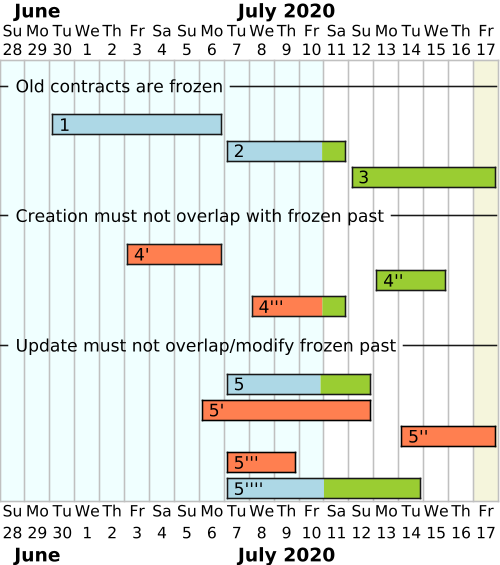
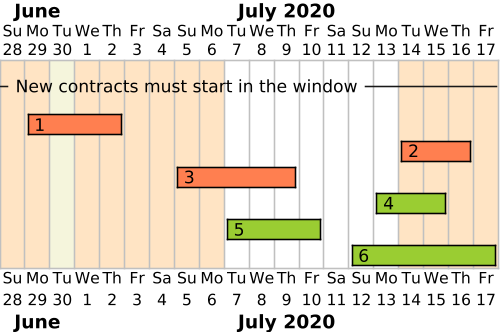

Time
This section describes how we handle time in the Flexibility Information System.
Clusivity in intervals
In general, all time ranges are half-open intervals. This means that the start time is inclusive and the end time is exclusive. This is also known as left-closed right-open.
We follow the
notation used in the PostgreSQL range type.
This means that the convention we follow is [start, end). null means
unbounded, and only the upper bound can be unbounded.
Bi-temporal data
For a good primer read this article on bi-temporal history on the Martin Fowler blog. We are using the bi-temporal data model to store and make available the data in the flexibility information system. With that model, we can answer questions like:
Who did we have as the service provider for controllable unit X on 2021-01-14 as of 2022-03-01?
Bi-temporal only when needed
Not all data in the system is bi-temporal. We generally provide history (record time) on all resources, but only some data (that needs it) have valid time timeline.
The following sections outline how we think about and implement bi-temporal data.
Record time
One of the requirements in NCDR is that the Flexibility Information System should be able to provide "historic" data for the resources in the system. This means that we need to be able to provide data that was valid at a certain point in time. We understand this to be related to the append-only history of when the data was recorded, updated and replaced in the system. In temporal data modelling we call this time axis record time. A common concept related to record time is to be able to provide data as of a point in time.
Other names for record time
There are other names for this time axis, such as transaction or system time.
Record time is typically implemented using a time range.
| Bound | Clusivity | Name | Alt name |
|---|---|---|---|
| Lower | Inclusive | Record time start | Updated at |
| Upper | Exclusive | Record time end | Replaced at |
Valid time
The other time axis we deal with is valid time. This can for example be when a contract is valid, or when a party is a member of a market. This time axis is related to the timeline of the data itself. When we say that something is time-dependent, we talk about the valid time timeline.
Other names for valid time
This time axis is also commonly referred to as application, actual, business or effective time.
Valid time is typically implemented using a time range.
| Bound | Clusivity | Name | Alt name |
|---|---|---|---|
| Lower | Inclusive | Valid time start | Valid from |
| Upper | Exclusive | Valid time end | Valid to |
Midnight alignment
We represent valid time as midnight-aligned. This constraint allows planning and performing operations more easily. However, we still store full timestamps for uniformity and to allow exceptional updates. This means that insert/update operations on the API should always have their valid time values aligned with the Norwegian midnight.
Frozen timeline
The timeline of some contracts can be frozen for some roles in the system. This means that the part of the past that is older than a given time interval from now is a frozen past where nothing can be added or edited.
The diagram below shows the example of a contract resource whose timeline is frozen after 6 days. Frozen contracts or parts of contracts are shown in blue, and non-frozen in green. Orange is used for errors / unacceptable contracts.

The freeze time is midnight-aligned, meaning that the exact freeze time is the nearest Norwegian midnight before the freeze interval computed from now. If we consider an operation being made on 17.07 (highlighted in green in the diagram), the freeze time will be 6 days before, that is 11.07, at Norwegian midnight. The exact freeze time is not frozen, so contracts can start there.
Creating a new contract (number 4) in the past can only be done in the
non-frozen past. In the diagram, only the second proposal (4'') is acceptable,
both others overlapping with frozen time partially or fully.
The frozen past cannot be edited, meaning that updating a contract (number 5)
cannot change its start date if it is already in this frozen past. The two first
updates in the diagram (5' and 5'') are therefore invalid, even though the
second one puts the contract in the non-frozen past. The start date of contract
5 is simply frozen and cannot move.
The end date of this partially frozen contract can be moved anywhere in the
non-frozen past, so the third update (5''') is invalid, but the last one is.
Timeline window
For some contracts, insertion can be restricted to a fixed window from the current time. This means that new contracts can start only in this interval.
The window is midnight-aligned, meaning that start and end times for the window are aligned to the nearest previous Norwegian midnight. The start time is inclusive but the end time is exclusive. The timeline window check only makes sure the contract starts between those bounds, but does not check the exact time of the contract, as this is a separate constraint. The current check should work with all kinds of contracts, midnight-aligned or not.
The diagram below shows the example of a contract resource with a timeline window of one week placed one week ahead of time.

In this example, we consider operations made on 30.06. This means the window starts on 07.07 Norwegian midnight and lasts for one week, that is, it ends on 14.07 Norwegian midnight. The start date is inclusive so contracts can start on 07.07, but the end date is exclusive, so no contract can start on 14.07.
The three first contracts are therefore invalid, even if number 2 starts at
midnight on 14.07, and the three last ones are valid, and number 5 can start
as soon as midnight on 07.07. The end date of these contracts does not matter.
Timezones
In the context of storing datetime-related information, a timestamp only has meaning if it is considered in a given timezone.
Storage format
Datetime data is stored in the system in the standard ISO 8601 format (date + time + timezone), so that information in the database is complete and does not depend on any user configuration.
Time in the user interface
As the Flexibility Information System is expected to only handle data related to
the Norwegian flexibility market, it makes sense to use Norwegian time. This
means both displaying dates in Norwegian format (DD.MM.YYYY and 24-hour time)
and in the Norwegian timezone (CET in winter, CEST in summer).
However, as the system is only a prototype, we do not want to roll our own mechanism to compute timezone offsets and we keep things simple. Therefore, we assume that our test users will use the software from the area using the Norwegian timezone, so times are displayed in the browser's local timezone. If a user is accessing the system from abroad, it is advised to change the browser's timezone to the Norwegian one, so that the data displayed keeps making sense.
We also use default datetime input components that do not handle the specificities of seasonal transitions between time offsets happening in Norway (gap of an hour when transitioning from winter to summer, duplication of an hour when transitioning from summer to winter). Any information entered around the times these transitions happen is not particularly checked and we are relying on whatever default behaviour of the browser's datetime API. This may change in a production setting but we are delaying this effort to later.